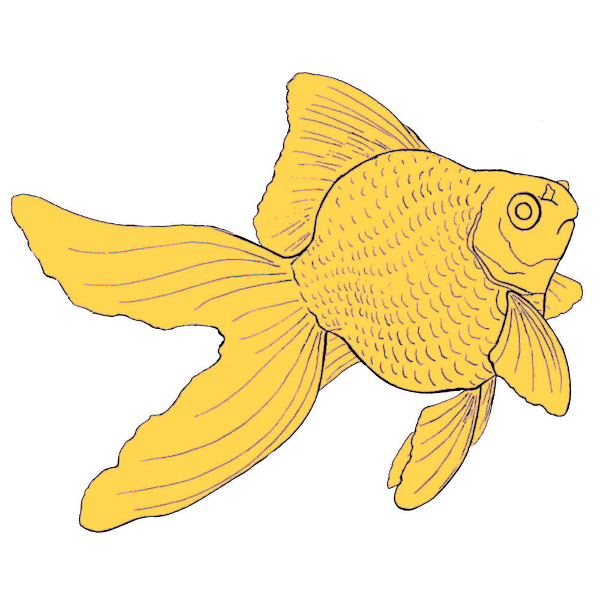

<mat-toolbar style="min-height: auto; height: 8%; background-color: #212121;">
  <mat-toolbar-row>
    <div class="d-flex justify-content-start">
      
    </div>
    <div class="spacer"></div>
    <div class="d-flex justify-content-end">
      <button mat-button>
        <mat-icon class="example-icon" (click)="toggleSidenav()">chat</mat-icon>
      </button>
    </div>

    <!-- <mat-icon class="example-icon">delete</mat-icon> -->
  </mat-toolbar-row>
</mat-toolbar>

<app-livestream [isSidenavVisible]="isSidenavVisible"></app-livestream>

<!-- <router-outlet></router-outlet> -->